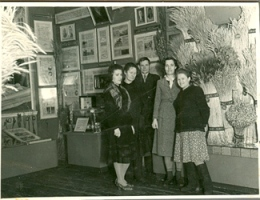
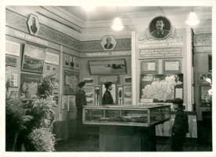
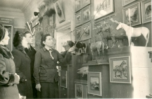

В этот период отделом также заведовали Е.Ф. Городничева (с 1949 по 1950 гг.), В.И. Елизарова (с 1950 по 1951 гг.), Л.Г. Никифорова (с 1951 по 1953 гг.). В 1951-1952 гг. музей рапортовал о коренной перестройке отдела природы «в духе мичуринской биологии». Были открыты две выставки: «Передовая мичуринская биологическая наука» и «Сталинский план борьбы за высокий устойчивый урожай». Позднее появился раздел «Преобразование природы области на основе передовой мичуринской биологической науки». В его экспозиции размещался макет укрупнённого хозяйства им. Кирова Татищевского района, на примере которого был показан «громаднейший комплекс мероприятий по изменению природы засушливого, подверженного действию суховеев Поволжья». Были созданы передвижные выставки, пропагандирующие методы работы И.В. Мичурина, а также методы и агроприёмы Т.Д. Лысенко – «творца новых растений». Рассказывалось о заслугах саратовских селекционеров А.П. Шехурдина, С.И. Исаева, Н.С. Аникина. Человек представал не только покорителем природы и потребителем её богатств, но и преобразователем и созидателем.
|  |  |  |
| Сотрудники музея на вновь созданной выставке «Передовая мичуринская биологическая наука». Вторая справа В.И. Елизарова, заведующая отделом природы. Фото 1951 г. | Раздел экспозиции отдела природы «Преобразование природы области на основе передовой мичуринской биологической науки». | Л.Г. Никифорова проводит экскурсию по теме «Развитие животноводства в Саратовской области в послевоенный период». Фото 1952 г. |
Необыкновенно активизируется кружковая и юннатская работа. Юные натуралисты работают в живом уголке музея, занимаются цветоводством, ухаживают за аквариумом, определяют гербарии. Сотрудники отдела проводят для них беседы о И.В. Мичурине, Т.Д. Лысенко, других растениеводах-мичуринцах, совершают вместе с ними многочисленные турпоходы. На слёты и утренники приглашаются работники типографии, хлебозавода, гармонной фабрики. В 1951 г. В.И. Елизаровой впервые был организован праздник - День птиц с участием художественной самодеятельности, чтением стихов и рассказов.